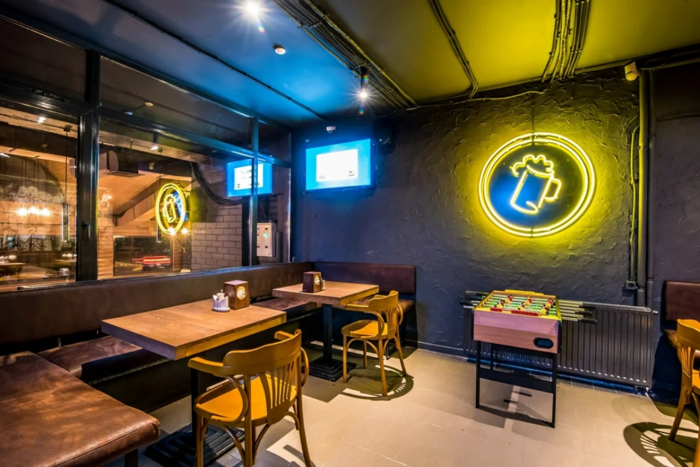
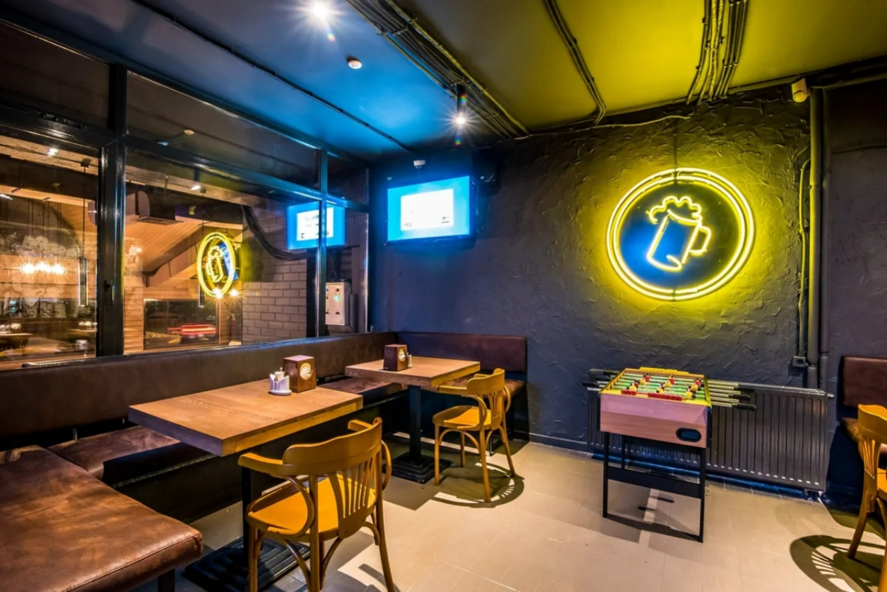

Куда пойти
Hay tantos tipos de cerveza en el mundo que es casi imposible enumerarlos todos. No hay lugares menos interesantes donde probar esta bebida. Casi todas las ciudades tienen una cervecería, y algunas valen la pena solo con mirarlas.
В мире существует столько сортов пива, что вряд ли можно все их перечислить. Интересных заведений, где можно попробовать этот напиток, — не меньше. Практически в каждом городе есть пивной бар, и некоторые из них стоят того, чтобы просто посмотреть на них.
There are so many types of beer in the world that it is hardly possible to list them all. There are no less interesting places where you can try this drink. There is a beer bar in almost every city, and some of them are worth it just to look at them.
Бар Шона — самый старый паб в мире
На первый взгляд бар Шона, расположенный в ирландском городе Атлон на границе графств Уэстмит и Роскоммон, ничем не выделяется среди подобных колоритных заведений. Заведение, которое находится в исторической части города возле руин нормандского замка, признано старейшим пабом в Европе в 2004 году, но теперь его владельцы желают доказать, что бар Шона является старейшим баром в мире.

В пивной культуре очень много различных видов баров:
-
Обычно они делятся на:
- Сервис-бар
- Лаунж-бар
- Лобби-бар
- Диско-бар
- Пул-бар
- Пив-бар


 
